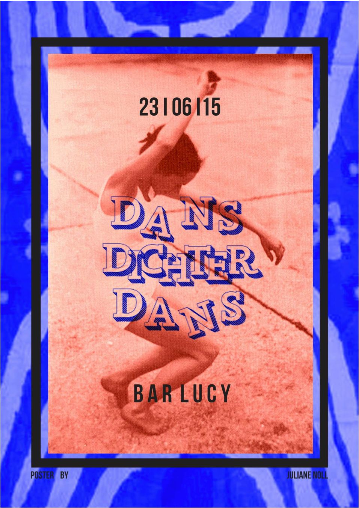
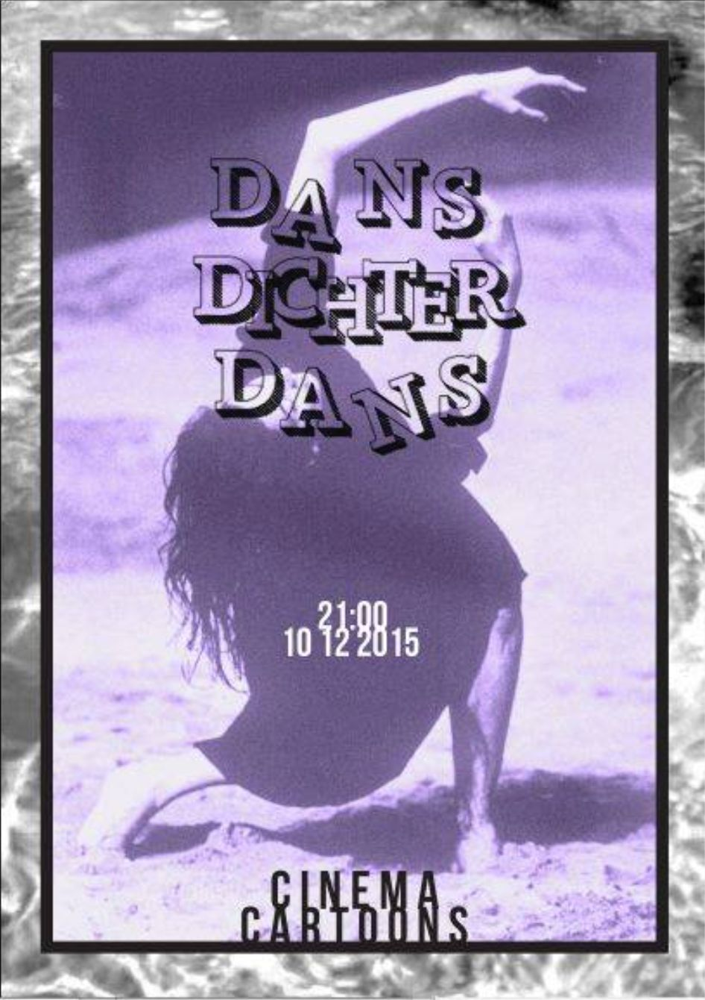
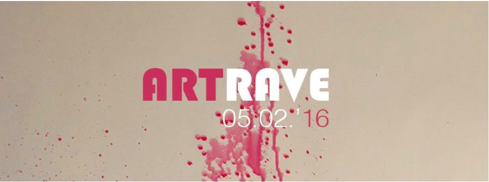
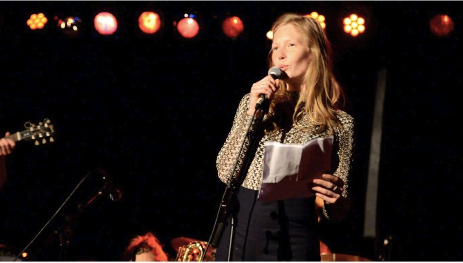
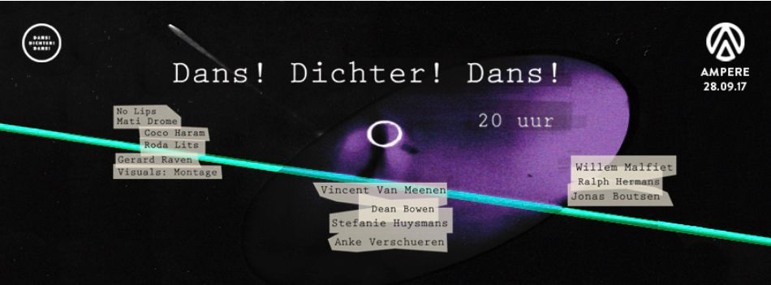
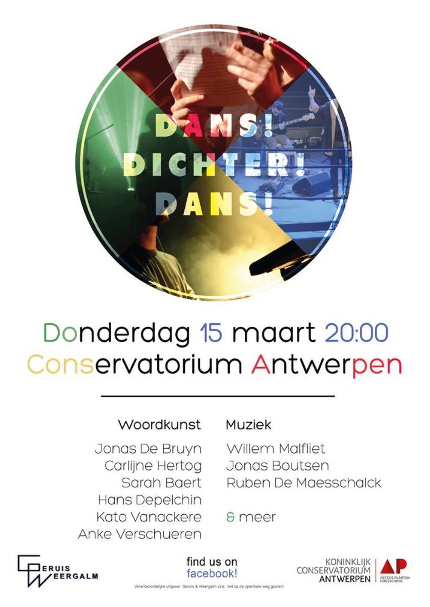
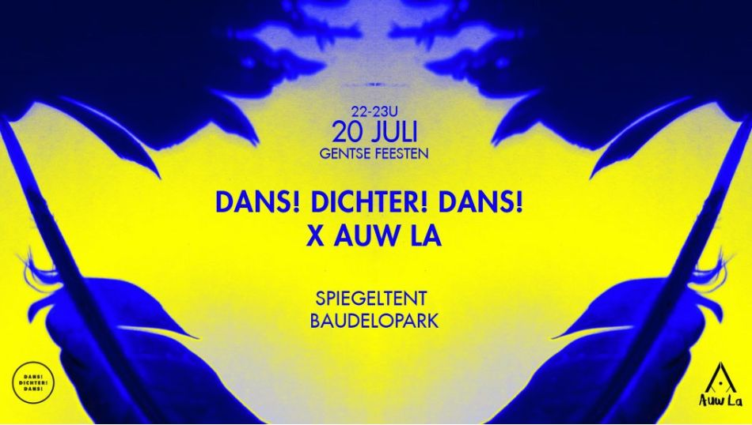
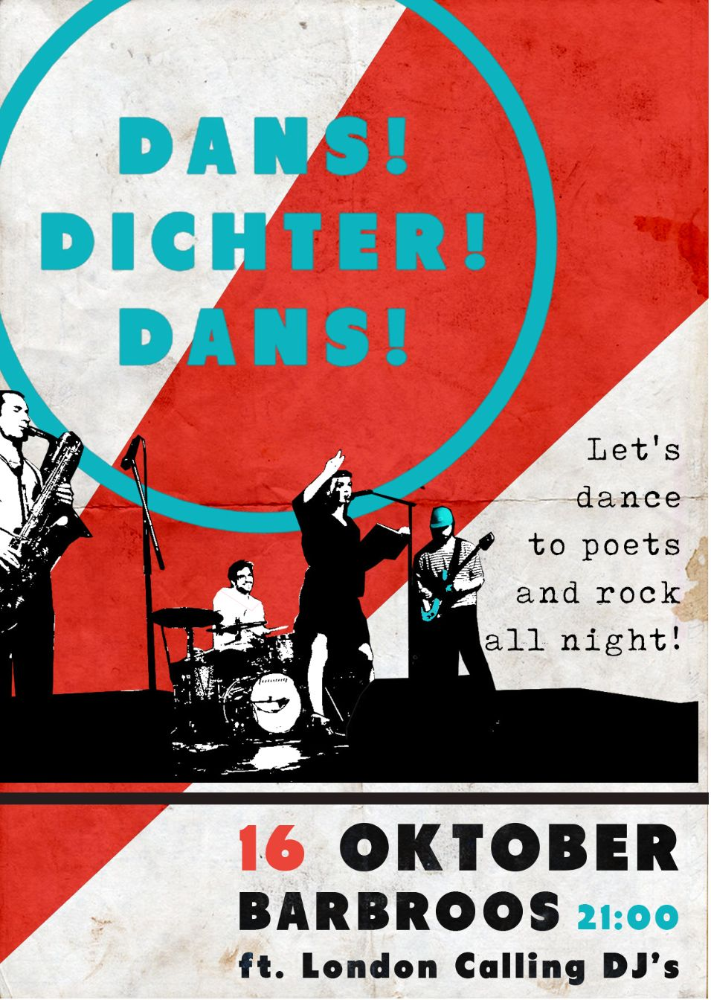

Dans! Dichter! Dans! #2
23/06/2015
Literatuur en feest — dansend tegen de duisternis, met absint.
Bekijk de video
23/06/2015
Literatuur en feest — dansend tegen de duisternis, met absint.
Bekijk de video
10/12/2015
Hannah Pinson, Stefanie Huysmans en Maarten Luyten startten met acht jazzmuzikanten Dans! Dichter! Dans!
Bekijk de video
05/02/2016
Uitgenodigd door Het Bos op ARTRAVE — sterk, maar minder intiem.
Bekijk de video
04/05/2016
We verwelkomden 150 mensen; dj's, bands en livestreams met interviews door STUDIO 03.
Bekijk de video
28/09/2017
Met schrijvers, het Dans! Dichter! Dans!-collectief, dj's en Roda Lits naar Ampere — visuals door MONTAGE.
Bekijk de video
15/03/2017
We doopten de refter van Conservatorium Antwerpen om tot 'Club Cons'.
Bekijk de video
20/07/2018
Met dichters van Auw La stonden we tijdens de Gentse Feesten in een volle spiegeltent — onze eerste editie in Gent.
Bekijk de video
16/10/2018
We bleven na de Gentse Feesten nog even in Gent hangen bij Barbroos, met London Calling dj's!
Bekijk de video